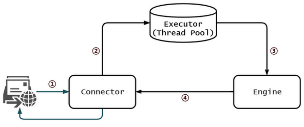

最近接收了一个老项目，突然甲方 QA 报了一个 bug，连续请求 60 次，成功 8 次，后面的 52 次全部失败，而且成功的 case 返回时间普遍较长。看了日志，并非业务上的异常。这让刚毕业没什么经验的我，顿时陷入了沉思。但回过神来考虑了一下，大胆才猜测，可能是网络问题或者是并发请求上的问题。
但其实业务异常相对容易排查，而网络或者并发的问题会相对难一些，刚好自己对于服务器服务器请求处理的流程也不太清楚，所以就花了时间看了下，最后基本断定是接口是实现方式出现了问题，重新改写成异步接口后问题基本解决。
所以今天就打算复盘一下，聊聊 tomcat 处理请求的流程，心里好有个数，以及对于某些场合下接口异步返回的重要性。
项目是 Spring Boot 开发的，默认用 jar 包部署，实际上就是运行在一个内嵌的 tomcat 中，所以下面就简单理一下 tomcat 处理并发请求的基本流程。这里不具体涉及到相关的组件以及源码，仅仅是梳理过程。
基本的 HTTP 请求处理的过程如下图，其中 Connector 和 Engine 是 tomcat 内置的组件。

maxThreads 参数设置），实际的处理速度取决于我们自己实现的服务程序；超出 maxThreads 部分，tomcat 仍然不断接收，但最多不能超过 maxConnector 设置的数，默认 1w 个；超过 maxConnector 的部分，tomcat 仍然不断接收，但不做处理，放入 Connector 创建的一个队列中，但最多不能超过 acceptCount，超过则拒绝（也就是我们所说的，服务器卡死、挂了）。清楚了上述流程之后，基本上对于服务器如何处理并发请求有了一个基本的概念，当并发量大的时候，可以对上述参数进行改动，以适应自己的项目。
在回到之前讲的项目上来，可以看到 tomcat 默认配置就已经具有不小的并发量了，并且在 Spring Boot 中 Controller 是单例的，且每个请求的处理互不相关，但是为什么接口返回的速度仍然不似预期呢？这其实和这个项目的业务时有关的。
这个接口是对算法的集成，发起请求后需要通过 HTTP 调用算法处理返回结果，请求调用的速度远大于接口处理的速度，再者算法依赖于独占的 GPU，也就意味着一个请求在处理时，其他请求必须等待。而之前实现的接口是同步的，且设置的算法接口返回的 timeout 为 15s，因此当请求积累到一定数量时，后续等待时间超过 15s，直接返回了异常的结果，导致后续请求全部失败。
显然，在处理速度低于请求速度的接口，并且依赖资源是独占或者很紧张的场景下，通过同步的形式返回接口是不可取的。由于接口占用的资源有限，可以理解成将此接口加上了一个 synchronized，后续请求过来都会无限制等待，或者设置了 timeout，无限制拒绝服务，这两种情况都不是我们想要的。
异步就是一种更优雅的形式，请求发送后，接口的调用者可以继续干别的事，请求处理完后会自动通知给调用者。并且在 Java 中的实现也是比较简单的，直接创建一个线程池来接收请求就可以了，线程池自带阻塞队列已经很好地帮我们处理排队这个场景，分布式场景则需要考虑用 redis 或者成熟的 mq 框架来进行调度了。调用者额外需要实现一个 callback 接口来接收处理完后的结果。这样再多的请求都能够有序的获取到处理的结果，无非是耗时的长短问题罢了。
@RequestMapping(value = "handleTask", method = RequestMethod.POST)
public RestResult handleTask(HttpServletRequest request,String callbackUrl) {
mServerPool.submit((Runnable) SpringUtil.getBean("imageTask", callbackUrl));
return new RestResult();
}其实，用过支付宝支付 API 的开发者应该很熟悉这个套路，因为阿里也是这么在做的，发起支付后，用户有一段时间可以确认支付，因此这个过程并非实时返回的，所有会有一个 callback 接口，用于实现用户支付完成的后的业务逻辑，当用户完成支付后，支付宝服务器会回调到这个接口，完成最终的一个业务。
以前一直觉得异步、并发很抽象，学习的时候也总是那么几个 demo（交叉输出、生产者消费者 etc.），但是真正遇到这么一个场景的时候，发现一切都是水到渠成的。只有在不断的实践中，才能调整对某一编程思想的认识，有新的体会。